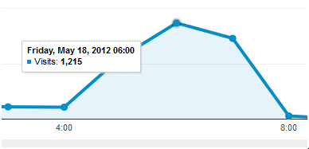
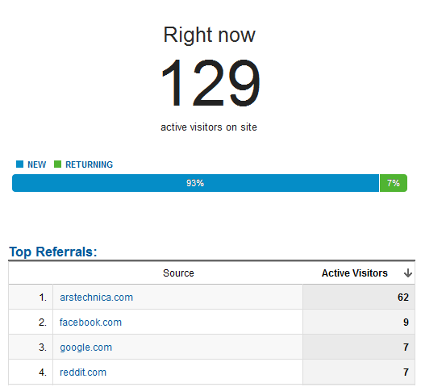

There’s a lovely piece on ORBIS at Ars Technica causing what is, for a digital humanities project, quite a bit of traffic.

Originally published at Digital Humanities Specialist. This edition preserves the original text and historical context.

There’s a lovely piece on ORBIS at Ars Technica causing what is, for a digital humanities project, quite a bit of traffic.
